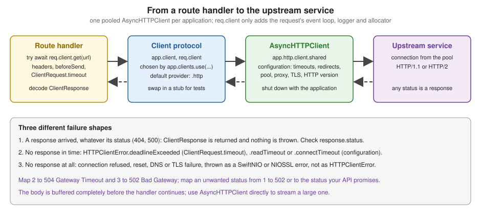

HTTP Client
|
This content was generated with the assistance of AI and should be verified against the official documentation before being relied on in production. |
This page is written against Vapor 4.122.2 on Swift 6.4 (the package builds in the Swift 6 language mode with tools
version 6.3, as the official template does; Vapor 4.122.2 itself needs tools version 6.0), with AsyncHTTPClient 1.36.2
and swift-nio 2.104.0, checked on 2026-10-17. Every Swift listing on this page was compiled in the Swift 6 language mode
with zero warnings in a scratch package; the behaviour described was verified with a VaporTesting suite and with curl
against the running service, and the output shown is captured from those runs. Vapor 5 is at 5.0.0-beta.4 and is not
released yet; where its client differs, that is noted. The page extends the Bookshelf service of the earlier pages of
this section: Bookshelf looks up book metadata, search results, reviews and cover images in an external catalog service,
and in its microservice variant it also relays requests to other internal services. Swift itself is covered by the
Swift Reference, and async functions, Sendable and actors by
Async/Await and Tasks and
Actors, Isolation and Sendable. The same topic in
Rust is in HTTP Clients & Proxies; timeouts, retries and circuit
breakers as general patterns are in the site’s Resilience section.
Why an outgoing call needs the same care as an incoming one
Every call to another service is where latency, partial failure and security problems enter a server. A handler that
awaits an upstream with no timeout holds a connection, a task and often a database connection for as long as the
upstream cares to take; an upstream that answers 500 or a different JSON shape turns into a failure of your
endpoint; a URL built from user input turns into a request your server makes with its own network position (server-side
request forgery). Vapor’s client makes the happy path short, and this page spends most of its length on the rest:
timeouts, status mapping, retries, caching, header forwarding, trace propagation and testing.
Where it sits
The client is not part of the request pipeline the way middleware and the router are; it is a service a handler (or a service the handler calls) uses while the response is being produced. The handler `await`s the client, the client borrows a pooled connection from AsyncHTTPClient, and the handler continues when the response is back.

Three things follow from that picture and are used throughout the page:
-
there is one
HTTPClientper application, with one connection pool;app.clientandreq.clientare cheap views over it, so creating them per request is the intended use; -
a response with any status is a successful call from the client’s point of view; only the absence of a response is an error;
-
the whole response body is read into memory before your code resumes, unless you drop down to AsyncHTTPClient.
The Client protocol, app.client and req.client
Client is a small protocol in Sources/Vapor/Client/Client.swift. Its requirements are the event loop to run on, a
few "derive a client" methods and the futures-based send:
// Vapor 4.122.2, abridged
public protocol Client: Sendable {
var eventLoop: EventLoop { get }
var byteBufferAllocator: ByteBufferAllocator { get }
func delegating(to eventLoop: EventLoop) -> Client
func logging(to logger: Logger) -> Client
func allocating(to byteBufferAllocator: ByteBufferAllocator) -> Client
func send(_ request: ClientRequest) -> EventLoopFuture<ClientResponse>
}Extensions on Client add get, post, patch, put, delete and send(_:headers:to:beforeSend:), plus post,
patch and put variants taking a Content value. The async throws overloads live in Client+Concurrency.swift and
simply .get() the future, so all new code calls the async flavour.
Two accessors give you a client:
| Accessor | What it is |
|---|---|
|
The application’s client. It is built when the property is read, delegating to |
|
|
Which implementation app.client returns is chosen by app.clients.use(...). Application.init already calls
app.clients.use(.http), whose provider wires the client to app.http.client.shared, the application’s single
HTTPClient from AsyncHTTPClient. That client is created lazily on first use, shares the application’s
EventLoopGroup, uses the application logger for background activity, and is shut down when the application shuts down.
If no provider were registered, reading app.client would stop the process with a fatalError ("No client
configured"). use also accepts a closure (Application) -> Client, which is how a test replaces the client (see
Testing code that calls other services).
Making requests
The first listing is the typed wrapper Bookshelf uses for the catalog: a Sendable struct that owns URL building, the
timeout and the mapping from upstream outcomes to the statuses Bookshelf exposes. It is created per request from
req.client, so each call logs to the request’s logger.
import Vapor
import AsyncHTTPClient
struct BookMetadata: Content, Equatable {
let isbn: String
let title: String
let authors: [String]
let pages: Int
}
struct NewReview: Content {
let isbn: String
let stars: Int
let text: String
}
struct ReviewReceipt: Content, Equatable {
let id: Int
let isbn: String
}
/// A typed wrapper around the external catalog service. It owns the URL building, the timeouts and the mapping from
/// upstream failures to the status codes Bookshelf wants to expose.
struct CatalogClient: Sendable {
let client: any Client
let baseURL: String
func metadata(isbn: String, traceContext: HTTPHeaders = [:]) async throws -> BookMetadata {
// Never interpolate unchecked user input into a URL: allow only ISBN characters.
guard !isbn.isEmpty, isbn.count <= 17, isbn.allSatisfy({ $0.isNumber || $0 == "-" || $0 == "X" }) else {
throw Abort(.badRequest, reason: "Malformed ISBN.")
}
var headers: HTTPHeaders = ["Accept": "application/json"]
headers.propagateTraceContext(from: traceContext)
let response = try await send {
try await client.get(URI(string: "\(baseURL)/isbn/\(isbn)"), headers: headers) { request in
request.timeout = .seconds(3)
}
}
switch response.status {
case .ok:
return try response.content.decode(BookMetadata.self)
case .notFound:
throw Abort(.notFound, reason: "The catalog does not know ISBN \(isbn).")
default:
throw Abort(.badGateway, reason: "Catalog answered \(response.status.code).")
}
}
func submit(_ review: NewReview) async throws -> ReviewReceipt {
let response = try await send {
try await client.post(URI(string: "\(baseURL)/reviews"), headers: ["X-Api-Key": "replace-me"], content: review)
}
guard response.status == .created else {
throw Abort(.badGateway, reason: "Catalog refused the review with \(response.status.code).")
}
return try response.content.decode(ReviewReceipt.self)
}
/// Turns transport failures (no response at all) into gateway statuses.
private func send(_ operation: () async throws -> ClientResponse) async throws -> ClientResponse {
do {
return try await operation()
} catch let error as HTTPClientError where error == .deadlineExceeded || error == .readTimeout {
throw Abort(.gatewayTimeout, reason: "The catalog did not answer in time.")
} catch let error as HTTPClientError where error == .connectTimeout {
throw Abort(.gatewayTimeout, reason: "Could not connect to the catalog.")
} catch let error as any AbortError {
throw error
} catch {
// Connection refused, reset, TLS failure, DNS failure: no response at all. Do not leak the raw error text.
throw Abort(.badGateway, reason: "The catalog is unreachable.")
}
}
}
extension HTTPHeaders {
/// Copies the W3C Trace Context headers from an incoming request so the downstream span joins the same trace.
mutating func propagateTraceContext(from incoming: HTTPHeaders) {
for name in ["traceparent", "tracestate", "baggage"] {
if let value = incoming.first(name: name) {
replaceOrAdd(name: name, value: value)
}
}
}
}
func clientRoutes(_ routes: some RoutesBuilder, catalog: CatalogClient) {
routes.get("books", ":isbn", "metadata") { req async throws -> BookMetadata in
let isbn = try req.parameters.require("isbn")
// req.client logs to req.logger and runs on the request's event loop; build the typed client per request.
let perRequest = CatalogClient(client: req.client, baseURL: catalog.baseURL)
return try await withRetries {
try await perRequest.metadata(isbn: isbn, traceContext: req.headers)
}
}
routes.post("reviews") { req async throws -> Response in
let review = try req.content.decode(NewReview.self)
let receipt = try await CatalogClient(client: req.client, baseURL: catalog.baseURL).submit(review)
return try await receipt.encodeResponse(status: .created, for: req)
}
}Source: Vapor docs: Client
Reading the listing from the top:
-
client.get(URI(string: ...), headers: ...)is the whole call.URIis Vapor’s URL value type; it isExpressibleByStringLiteralandExpressibleByStringInterpolation, so a plain string works, andURI(scheme:host:port:path:query:fragment:)builds one from parts without any string concatenation. -
The ISBN is validated before it is interpolated into the URL. A path segment taken from a request and pasted into an outgoing URL must be checked against the narrowest grammar the upstream accepts (here digits, hyphens and
X); otherwise../,?,#or%2Fin the input change which resource your server asks for. -
response.statusis inspected explicitly. The client does not turn404or500into a Swift error. -
response.content.decode(BookMetadata.self)uses the sameContentmachinery as incoming requests: the decoder is chosen from the response’sContent-Type. -
post(_:headers:content:)encodes aContentvalue with the default encoder (JSON unless configured otherwise) and setsContent-Typeitself. TheX-Api-Keyvalue is an obvious placeholder; real keys come from the environment (see the Configuration and Environment page). -
the
sendhelper turns transport failures into gateway statuses, which is the subject of Failures, status mapping and retries.
The shortcut methods are thin wrappers over one primitive:
| Call | Meaning |
|---|---|
|
|
|
|
|
any method, including those without a shortcut ( |
|
send a fully built |
Building the request: beforeSend
beforeSend is a closure (inout ClientRequest) throws -> () that runs on the request before it is sent. It is the
place to encode a query string, add authentication, set a body and override the timeout, and a throw inside it fails
the call with that error before anything touches the network.
import Vapor
extension CatalogClient {
/// GET with a query string and a bearer token, built in the beforeSend closure.
func search(title: String, limit: Int, token: String) async throws -> [BookMetadata] {
let response = try await client.get(URI(string: "\(baseURL)/search")) { request in
try request.query.encode(["q": title, "limit": String(limit)])
request.headers.bearerAuthorization = BearerAuthorization(token: token)
request.headers.replaceOrAdd(name: .accept, value: "application/json")
request.timeout = .seconds(3)
}
guard response.status == .ok else {
throw Abort(.badGateway, reason: "Catalog answered \(response.status.code).")
}
return try response.content.decode([BookMetadata].self)
}
}
struct MissingSecret: Error {
let variable: String
}
/// Production must provide CATALOG_TOKEN; development and tests use an obvious placeholder.
func catalogToken(for environment: Environment) throws -> String {
if let token = Environment.get("CATALOG_TOKEN") { return token }
guard environment != .production else { throw MissingSecret(variable: "CATALOG_TOKEN") }
return "dev-token"
}
func searchRoutes(_ routes: some RoutesBuilder, catalog: CatalogClient, token: String) {
routes.get("search") { req async throws -> [BookMetadata] in
let title = try req.query.get(String.self, at: "title")
let perRequest = CatalogClient(client: req.client, baseURL: catalog.baseURL)
return try await perRequest.search(title: title, limit: 5, token: token)
}
}Source: Vapor docs: Client, Content
ClientRequest is a plain Sendable struct, so it can also be built by hand, stored and sent later:
| Member | Notes |
|---|---|
|
|
|
An optional |
|
An optional |
|
A |
|
A |
Reading the response
ClientResponse has status, headers and body (an optional ByteBuffer), and content and description
conveniences. Some consequences that surprise people:
-
Every status arrives as a value. A
404, a429and a503are all successful `await`s; mapping them is your job. -
The body is complete when you get it. Vapor calls AsyncHTTPClient’s buffering
execute(request:), whose accumulator limit is the largestByteBuffer(about 4 GiB,UInt32.maxbytes) in the 1.36.2 sources, so there is no practical ceiling below available memory. A hostile or buggy upstream can therefore exhaust your memory with one response. If the upstream is not fully trusted, or the body can be large, read it with AsyncHTTPClient andcollect(upTo:), as shown below. -
response.content.decodethrowsAbort(.lengthRequired)when there is no body at all, and a decoding error (whichErrorMiddlewarerenders as a400) when the body does not match the type. Decoding failures from an upstream are your server’s fault, not the caller’s; the wrapper above lets them surface as they are for brevity, and a production wrapper should catchDecodingErrorand rethrowAbort(.badGateway). -
ClientResponseisResponseEncodable, so a handler canreturnone: the status, headers and body are copied into the outgoingResponse. That is convenient for a transparent proxy and dangerous without filtering, as the gateway section explains (hop-by-hop headers,Set-Cookie, andContent-Lengthwould be forwarded as they are). -
ClientResponseis alsoCodable(status, headers and the body as Base64), which makes it easy to store in a cache.
Timeouts, redirects and the shared client’s configuration
There are two independent places to limit time, and they measure different things.
| Setting | Measures | Failure |
|---|---|---|
|
Total time allowed for this one request (deadline |
|
|
Establishing the TCP (and TLS) connection. Default 10 seconds when unset. |
|
|
Maximum gap between received bytes while reading. No limit by default. |
|
Always set ClientRequest.timeout for calls made on behalf of a user request. The default configuration has no read
limit and no overall limit, so a stalled upstream holds the handler until the client or a proxy in front of you gives
up.
The shared client is configured through app.http.client.configuration, a value of AsyncHTTPClient’s
HTTPClient.Configuration. It must be assigned before the first use of the client: once the shared client exists, a
later assignment only logs Cannot modify client configuration after client has been used. and is ignored. The usual
place is configure(_:), before any code reads app.client.
import Vapor
import AsyncHTTPClient
func configureHTTPClient(_ app: Application) throws {
var configuration = HTTPClient.Configuration()
configuration.timeout = .init(connect: .seconds(5), read: .seconds(15))
configuration.redirectConfiguration = .follow(max: 5, allowCycles: false)
configuration.connectionPool.idleTimeout = .seconds(30)
configuration.connectionPool.concurrentHTTP1ConnectionsPerHostSoftLimit = 16
configuration.httpVersion = .automatic
// configuration.proxy = .server(host: "proxy.internal", port: 3128)
// configuration.decompression = .enabled(limit: .ratio(10))
// Must run before the first use of app.client; afterwards Vapor only logs a warning and ignores the change.
app.http.client.configuration = configuration
}The properties worth knowing in AsyncHTTPClient 1.36.2:
| Property | Notes |
|---|---|
|
|
|
|
|
|
|
|
|
|
|
Client TLS settings from swift-nio-ssl: trust roots, |
|
|
|
Connect to a different host than the URL says, bind outgoing connections to an interface, recycle connections after N uses. |
|
The |
The pool is per host and per scheme, and keep-alive connections are reused across requests, which is why a client per
request (a new HTTPClient for every call) is wrong: it throws the pool away, opens a new TLS handshake each time and
must be shut down explicitly.
Failures, status mapping and retries
A call can end in three different ways, and the wrapper in the first listing distinguishes them:
-
A response arrived (any status). Nothing is thrown. The wrapper maps
200to a value,404toAbort(.notFound)and everything else toAbort(.badGateway). -
No response arrived in time. The client throws
HTTPClientError.deadlineExceeded(the per-request timeout),.readTimeoutor.connectTimeout. The wrapper maps them to504 Gateway Timeout. -
No response at all. Connection refused, reset, DNS or TLS failures surface as the underlying SwiftNIO or NIOSSL error, not as
HTTPClientError. The wrapper catches everything else and maps it to502 Bad Gatewaywith a fixed reason, because the raw message (for exampleconnection reset (error set): Connection refused) (errno: 61)) names internal hosts and ports and must not reach the caller. Log the original error before replacing it.
Observed behaviour worth knowing: with retryConnectionEstablishment on (the default), a refused connection does not
fail immediately; the pool keeps trying until the deadline, so against a closed port the call returned a 502 after 3.0
seconds, exactly the request’s timeout.
ErrorMiddleware already renders an Abort as JSON, so mapping to Abort is all a handler needs; see the
Error Handling page. The Bookshelf routes also retry. The Vapor client does not
retry requests by itself (the pool only retries connecting), so a retry helper is yours to write. It must retry only
what is safe to repeat: idempotent methods (GET, PUT, DELETE) and only transient failures. Retries that must
survive a restart belong in a job queue instead (see Queues &
Background Jobs); an HTTP API from a mail provider, for example, is called this way from the
Sending Email page’s adapter.
import Vapor
/// Retries an idempotent operation with exponential backoff and jitter, only for failures that may be transient.
/// Never wrap a non-idempotent call (a POST that creates something) unless the upstream supports idempotency keys.
func withRetries<Result: Sendable>(
attempts: Int = 3,
initialDelay: Duration = .milliseconds(200),
_ operation: @Sendable () async throws -> Result
) async throws -> Result {
var delay = initialDelay
for attempt in 1...attempts {
do {
return try await operation()
} catch let error as Abort
where attempt < attempts && [.badGateway, .serviceUnavailable, .gatewayTimeout].contains(error.status) {
let jitter = Double.random(in: 0.5...1.5)
try await Task.sleep(for: delay * jitter)
delay *= 2
}
}
preconditionFailure("unreachable: the last attempt either returns or throws")
}Source: Vapor docs: Errors
Why the helper looks like this:
-
It retries on
502,503and504only, never on4xx, which will not change on the second try. -
The delay doubles each attempt and is multiplied by a random factor in 0.5 to 1.5 (jitter), so many instances that failed together do not retry together.
-
Task.sleepis cancellation-aware: if the client disconnects and the request task is cancelled, the sleep throwsCancellationErrorand the loop ends. -
Total time is
attempts * timeoutplus the delays. With three attempts of 3 seconds theslowupstream above answers504after about 9.6 seconds, not 3. Budget for that, or pass a single overall deadline into the helper, and never retry aPOSTthat creates something unless the upstream supports an idempotency key.
A retry that hammers an unhealthy upstream makes the outage worse. Circuit breakers, bulkheads and hedging are the
complement; they are described, in framework-neutral terms, in the site’s
Circuit Breaker and Cache and
Hedge pages, and there is no Vapor-specific package for them, so wrap them around the same CatalogClient.
Calling an external API with caching
Metadata for a book changes rarely and the catalog is slow and rate-limited, so Bookshelf caches it. The pattern is cache-aside: look in the cache, call the upstream on a miss and store the answer with a time to live. Two details matter in a concurrent server: simultaneous misses for the same key should share one upstream call (otherwise a cold cache turns a burst into a stampede), and failures must not be cached.
import Vapor
/// A small cache-aside store with a time to live and request coalescing: concurrent misses for one key share a single
/// upstream call, and failures are never cached.
actor TTLCache<Value: Sendable> {
private struct Entry {
let value: Value
let expires: ContinuousClock.Instant
}
private var entries: [String: Entry] = [:]
private var inFlight: [String: Task<Value, any Error>] = [:]
private let ttl: Duration
private let clock = ContinuousClock()
init(ttl: Duration) {
self.ttl = ttl
}
func value(for key: String, load: @escaping @Sendable () async throws -> Value) async throws -> Value {
if let entry = entries[key], entry.expires > clock.now {
return entry.value
}
if let running = inFlight[key] {
return try await running.value
}
let task = Task { try await load() }
inFlight[key] = task
defer { inFlight[key] = nil }
let value = try await task.value
entries[key] = Entry(value: value, expires: clock.now.advanced(by: ttl))
return value
}
func invalidate(_ key: String) {
entries[key] = nil
}
}
/// The catalog wrapped with the cache. The client is created from the application, not from a request, because the
/// cached value outlives the request that populated it.
struct CachedCatalog: Sendable {
let catalog: CatalogClient
let cache = TTLCache<BookMetadata>(ttl: .seconds(300))
func metadata(isbn: String) async throws -> BookMetadata {
let catalog = self.catalog
return try await cache.value(for: isbn) {
try await catalog.metadata(isbn: isbn)
}
}
}
func cachedRoutes(_ routes: some RoutesBuilder, cached: CachedCatalog) {
routes.get("books", ":isbn", "cached") { req async throws -> BookMetadata in
try await cached.metadata(isbn: try req.parameters.require("isbn"))
}
}Source: Vapor docs: Client
-
TTLCacheis anactor, so its dictionaries are protected without locks andCachedCatalogstaysSendable(Swift 6 rejects a plainvardictionary in aSendablestruct). TheTask<Value, any Error>stored ininFlightis the shared upstream call;deferremoves it whether it succeeded or threw. -
Actors are re-entrant: while one caller
await`s the task, another can enter `value(for:load:). TheinFlightentry is what makes the second caller join the first instead of starting a new call. -
CachedCatalogis built fromapp.clientinconfigure, because a cached value outlives the request that filled it (to keep such a service for the whole application, see Services, Storage and Dependency Injection). The loader cannot usereq.client: the cached call would log to the first caller’s logger and run on its event loop. -
The cache is per process. With several instances each keeps its own, and an invalidation on one does not reach the others. For a shared cache, or one that survives restarts, use Redis; that is the subject of the Redis & Caching page. HTTP caching rules (
Cache-Control,ETag,Age) belong to the upstream response and are best honoured by reading them fromresponse.headersto choose the TTL, rather than hard-coding five minutes. -
ttl: .seconds(300)is a trade-off: a longer TTL protects the upstream and serves stale data. Add an explicitinvalidate(_:)call when an edit goes through your own service.
Checking the behaviour with the test double of the last section: five concurrent requests for one ISBN produce a single recorded upstream call, and a sixth after they finish still produces none.
AsyncHTTPClient directly
Vapor’s Client is deliberately small. When you need streaming in either direction, a hard limit on how much of the
body you read, HTTP/2 specifics, per-request TLS, or the structured async API, use AsyncHTTPClient itself. It is
already a dependency of Vapor, but add it to your own target to import it:
// Package.swift (dependencies and the App target, abridged)
.package(url: "https://github.com/vapor/vapor.git", from: "4.122.2"),
.package(url: "https://github.com/swift-server/async-http-client.git", from: "1.30.0"),
// ...
.executableTarget(name: "App", dependencies: [
.product(name: "Vapor", package: "vapor"),
.product(name: "AsyncHTTPClient", package: "async-http-client"),
])Use the application’s own client, req.application.http.client.shared (or app.http.client.shared), so the connection
pool, the configuration above and the shutdown are shared with Vapor. HTTPClient.shared is a global singleton with a
different configuration (browser-like timeouts of 90 seconds, redirects up to 20, decompression on, cannot be shut
down); using it works but bypasses everything you configured on the application, and it is not shut down with the
application. Do not create a new HTTPClient per request: every instance owns a pool and must be shut down.
import Vapor
import AsyncHTTPClient
import NIOCore
func streamingRoutes(_ routes: some RoutesBuilder, catalogURL: String) {
// Stream a large upstream body straight through without buffering it.
routes.get("covers", ":isbn") { req async throws -> Response in
let isbn = try req.parameters.require("isbn")
guard isbn.allSatisfy({ $0.isNumber || $0 == "-" }) else { throw Abort(.badRequest) }
let http = req.application.http.client.shared
let upstream = try await http.execute(
HTTPClientRequest(url: "\(catalogURL)/covers/\(isbn)"),
timeout: .seconds(20),
logger: req.logger
)
guard upstream.status == .ok else { throw Abort(.badGateway) }
let response = Response(status: .ok)
if let type = upstream.headers.first(name: "content-type") {
response.headers.replaceOrAdd(name: .contentType, value: type)
}
response.body = .init(managedAsyncStream: { writer in
for try await chunk in upstream.body {
try await writer.writeBuffer(chunk)
}
})
return response
}
// Read a small body with a hard limit; collect(upTo:) throws NIOTooManyBytesError past it.
routes.get("books", ":isbn", "bounded") { req async throws -> BookMetadata in
let isbn = try req.parameters.require("isbn")
guard isbn.allSatisfy({ $0.isNumber || $0 == "-" }) else { throw Abort(.badRequest) }
let upstream = try await req.application.http.client.shared.execute(
HTTPClientRequest(url: "\(catalogURL)/isbn/\(isbn)"),
timeout: .seconds(5),
logger: req.logger
)
guard upstream.status == .ok else { throw Abort(.badGateway) }
do {
let buffer = try await upstream.body.collect(upTo: 64 * 1024)
return try JSONDecoder().decode(BookMetadata.self, from: Data(buffer.readableBytesView))
} catch is NIOTooManyBytesError {
throw Abort(.badGateway, reason: "Upstream body exceeded 64 KiB.")
}
}
}What the two routes show:
-
HTTPClientRequest(url:)takes aStringURL; the method defaults toGET;bodycan be.bytes(...)or.stream(...)with a known or unknown length.execute(_:timeout:logger:)returns as soon as the response head arrives;response.bodyis anAsyncSequenceofByteBuffer. The timeout is a deadline for the request as a whole, so it must be long enough for the entire transfer of a large body. -
The first route forwards each chunk to the client with
managedAsyncStream, so back-pressure goes end to end: if the caller reads slowly,writeBuffersuspends, the loop stops pulling from the upstream and the pool connection stays busy but no memory grows. Memory per request is one chunk, not the whole cover image. -
The second route reads at most 64 KiB with
collect(upTo:), which throwsNIOTooManyBytesErroras soon as the declaredContent-Lengthor the received bytes exceed the limit. This is the bounded alternative toClientResponse.body. -
Both routes validate the path component before it reaches the URL, for the reason given earlier.
When to prefer which:
| Need | Vapor Client |
AsyncHTTPClient directly |
|---|---|---|
JSON in, JSON out, a few headers |
yes |
more code |
Per-request logger, request-id in logs, |
yes |
manual |
Replace the client in tests ( |
yes |
no, you would wrap it yourself |
Stream a large response without buffering it |
no |
yes |
Cap the response body size |
no |
yes ( |
Stream a large request body, send trailers |
no |
yes |
Per-request TLS configuration, local address |
no |
yes ( |
Inspect the redirect chain |
no |
yes ( |
For downloads, streaming uploads to S3 and the file side of this, see the File Uploads and Streaming page (and Static Files and File I/O for files on disk).
Forwarding headers in a gateway
A gateway (or backend for frontend) receives a request, forwards it to an internal service and returns the answer. In
Bookshelf’s microservice variant a gateway route group relays to the catalog and reviews services. The concerns are
always the same: which request headers to pass on, which to add, which response headers to drop, and how to keep the
path inside the upstream. The Microservices and an API Gateway
page builds on this section.
import Vapor
/// Headers a gateway forwards to the upstream (an allow-list is safer than a block-list).
private let forwardedRequestHeaders: [HTTPHeaders.Name] = [
.accept, .acceptLanguage, .authorization, .contentType, .ifNoneMatch,
HTTPHeaders.Name("traceparent"), HTTPHeaders.Name("tracestate"), HTTPHeaders.Name("X-Request-ID"),
]
/// Hop-by-hop headers (RFC 9110, section 7.6.1) must never be copied from the upstream response; `Date` and
/// `Content-Length` are set again by this server.
private let hopByHop: Set<String> = [
"connection", "keep-alive", "proxy-authenticate", "proxy-authorization", "te", "trailer", "transfer-encoding",
"upgrade", "content-length", "date",
]
func gatewayRoutes(_ routes: some RoutesBuilder, upstream: String) {
for method in [HTTPMethod.GET, .POST, .PUT, .DELETE] {
routes.on(method, "gateway", "**", body: .collect(maxSize: "1mb")) { req async throws -> Response in
// Re-encode every segment and refuse dot segments so the path cannot escape the upstream prefix.
let segments = req.parameters.getCatchall()
guard !segments.contains(where: { $0 == ".." || $0 == "." || $0.contains("/") }) else {
throw Abort(.badRequest)
}
let path = segments
.compactMap { $0.addingPercentEncoding(withAllowedCharacters: .urlPathAllowed) }
.joined(separator: "/")
var url = URI(string: "\(upstream)/\(path)")
url.query = req.url.query
var headers = HTTPHeaders()
for name in forwardedRequestHeaders {
for value in req.headers[name] { headers.add(name: name, value: value) }
}
headers.replaceOrAdd(name: "X-Forwarded-Host", value: req.headers.first(name: .host) ?? "")
headers.replaceOrAdd(name: "X-Forwarded-Proto", value: req.url.scheme ?? "http")
if let peer = req.peerAddress?.ipAddress {
headers.replaceOrAdd(name: "X-Forwarded-For", value: peer)
}
headers.replaceOrAdd(name: "X-Request-ID", value: req.id)
var outgoing = ClientRequest(method: req.method, url: url, headers: headers, body: req.body.data)
outgoing.timeout = .seconds(10)
let upstreamResponse = try await req.client.send(outgoing)
var responseHeaders = HTTPHeaders()
for (name, value) in upstreamResponse.headers where !hopByHop.contains(name.lowercased()) {
responseHeaders.add(name: name, value: value)
}
return Response(
status: upstreamResponse.status,
headers: responseHeaders,
body: upstreamResponse.body.map { Response.Body(buffer: $0) } ?? .empty
)
}
}
}Design decisions in that listing, each of which prevents a real class of problems:
-
Allow-list the request headers. Copying every incoming header would forward
Cookie, internalX-headers an attacker invented,Host(which must name the upstream, not your gateway) andContent-Length(the client sets it from the body). The list passes content negotiation,Authorization(the upstream authenticates the user), conditional requests and tracing headers. -
Add the forwarding headers yourself.
X-Forwarded-For,X-Forwarded-HostandX-Forwarded-Protoare set from facts the gateway knows (req.peerAddress, theHostheader and the URL scheme). The standard form isForwarded(RFC 7239). If your own service sits behind a load balancer,peerAddressis the balancer; see Request and Response for how to read the original client address safely, and the Server Configuration page for proxy headers. -
Drop hop-by-hop headers from the response.
Connection,Keep-Alive,Transfer-Encoding,Upgradeand friends describe a single connection and must not be relayed. The list also dropsContent-LengthandDate, which this server sets again; the first run of the example forwarded twoDateheaders untildatewas added. -
Do not enable decompression on a gateway client. A decoded body forwarded together with the upstream’s
Content-Encodingheader would describe the wrong bytes; leaving decompression off (the default) forwards bytes and headers consistently. -
Keep the path inside the upstream. The path comes from
getCatchall()as decoded segments. Segments equal to.or.., or containing/(from%2F), are rejected, and every other segment is percent-encoded again before it is joined. Without that,/gateway/../adminor/gateway/a%2F..%2Fbreaches paths the gateway was never meant to expose. The upstream base URL is fixed by configuration, never taken from the request: a gateway that fetches a URL supplied by the caller is a server-side request forgery primitive, which can reach cloud metadata endpoints and internal admin services. If a feature truly must fetch a user-supplied URL, restrict schemes tohttps, resolve and check the address against private ranges at connect time, disable redirects (redirectConfiguration = .disallow) or re-validate every hop, and cap the body size (see the OWASP SSRF cheat sheet in the references, and the Security Hardening page). -
Body limits. The route collects at most 1 MB (
body: .collect(maxSize: "1mb")); for larger bodies a gateway should stream, which needs AsyncHTTPClient and a streaming route as in the previous section.
The relayed behaviour, as captured from the running example:
$ curl -si -H 'traceparent: 00-0af7651916cd43dd8448eb211c80319c-b7ad6b7169203331-01' \
'http://127.0.0.1:8080/gateway/isbn/9780441013593?x=1'
HTTP/1.1 200 OK
content-type: application/json; charset=utf-8
X-Seen-Trace: 00-0af7651916cd43dd8448eb211c80319c-b7ad6b7169203331-01
content-length: 79
{"title":"Dune","authors":["Frank Herbert"],"pages":412,"isbn":"9780441013593"}
$ curl -si -X POST -H 'content-type: application/json' \
-d '{"isbn":"9780441013593","stars":5,"text":"Great"}' http://127.0.0.1:8080/gateway/reviews
HTTP/1.1 201 Created
content-type: application/json; charset=utf-8
content-length: 31
{"id":7,"isbn":"9780441013593"}
$ curl -si 'http://127.0.0.1:8080/gateway/a/%2E%2E/b'
HTTP/1.1 400 Bad Request
{"reason":"Bad Request","error":true}The upstream stand-in added the X-Seen-Trace header to show that traceparent arrived; the next section explains why
it did. The upstream also issues a redirect at /upstream/old; the gateway followed it because the shared client
follows up to five redirects, which is right for a relay to a trusted internal service and wrong for anything else.
Propagating trace context
A distributed trace only holds together if each service passes the trace identifier on. The W3C Trace Context standard
defines two headers for that, traceparent (version, trace id, parent span id, flags) and tracestate, and baggage
carries application key-value pairs.
How much of this Vapor does for you in 4.122.2, verified in the sources:
-
Incoming.
TracingMiddleware(opt-in,app.middleware.use(TracingMiddleware())) extracts the context from the request headers and runs the rest of the chain inside a server span. It is covered with the other built-ins on the Middleware page. -
Outgoing, through Vapor’s
Client. AsyncHTTPClient creates a client span for the request when a tracer is configured (HTTPClient.Configuration.tracing.tracer, which defaults to the globally bootstrapped tracer at the time the configuration is created). The code that injectstraceparentinto the outgoing headers, however, runs only on AsyncHTTPClient’sasyncAPI (HTTPClient.execute(_:timeout:logger:)withHTTPClientRequest), and it takes the context from the current task’sServiceContext. Vapor’sClientuses the older future-basedexecute(request:). Do not assume an outgoing VaporClientcall carries the incoming trace; verify with a header-echoing upstream, as the example does. -
The robust approach is explicit: copy the trace headers you received onto the outgoing request. That is what
propagateTraceContext(from:)in the first listing does (traceparent,tracestate,baggage), and what the gateway’s allow-list does fortraceparentandtracestate. It needs no tracing library at all, works for the sampled flag and keeps the upstream’s spans in the same trace, at the cost of not creating a client span of your own.
To get full tracing (the Tracing, Metrics & OpenTelemetry
page shows a client-span helper), bootstrap OpenTelemetry (swift-otel) or another swift-distributed-tracing backend
first, register TracingMiddleware, then either rely on the async AsyncHTTPClient path or forward the headers
explicitly. In both cases do not forward Authorization or cookies to a third party on the grounds of "propagating
context"; trace headers are all a tracing system needs.
Testing code that calls other services
Do not call the real catalog from tests: it is slow, flaky and rate-limited, and you cannot make it return a 500 on
demand. Because Client is a protocol and app.clients.use(_:) selects the implementation, a test registers a stub
that answers from a closure and records what was sent. No sockets are involved, and the test exercises the real
handlers, the real CatalogClient and the real ErrorMiddleware.
import Vapor
import NIOConcurrencyHelpers
/// A Client that never touches the network: it answers from a closure and records what it was asked.
struct StubClient: Client {
let eventLoop: any EventLoop
let recorded: NIOLockedValueBox<[ClientRequest]>
let handler: @Sendable (ClientRequest) -> ClientResponse
func delegating(to eventLoop: any EventLoop) -> any Client {
StubClient(eventLoop: eventLoop, recorded: recorded, handler: handler)
}
func send(_ request: ClientRequest) -> EventLoopFuture<ClientResponse> {
recorded.withLockedValue { $0.append(request) }
return eventLoop.makeSucceededFuture(handler(request))
}
}
extension Application {
/// Replaces the HTTP client for this application, typically from a test, and returns the request log.
@discardableResult
func useStubClient(
handler: @escaping @Sendable (ClientRequest) -> ClientResponse
) -> NIOLockedValueBox<[ClientRequest]> {
let recorded = NIOLockedValueBox<[ClientRequest]>([])
clients.use { app in
StubClient(eventLoop: app.eventLoopGroup.next(), recorded: recorded, handler: handler)
}
return recorded
}
}Source: Vapor docs: Testing
The stub is installed before configure(_:) runs, because configure builds CachedCatalog from app.client and
the cache would otherwise hold a client wired to the real network. NIOLockedValueBox is the Sendable mutable box
from swift-nio; it is what lets the @Sendable handler closure and the test share the request log under Swift 6.
import VaporTesting
import Testing
@testable import App
@Suite(.serialized) struct ClientTests {
@Test func mapsUpstreamStatusesAndSendsTraceContext() async throws {
let app = try await Application.make(.testing)
do {
let log = app.useStubClient { request in
guard request.url.path.hasSuffix("/isbn/9780441013593") else { return ClientResponse(status: .notFound) }
var response = ClientResponse(status: .ok)
try? response.content.encode(BookMetadata(isbn: "9780441013593", title: "Dune", authors: ["Frank Herbert"], pages: 412))
return response
}
try await configure(app)
try await app.testing().test(.GET, "books/9780441013593/metadata", headers: ["traceparent": "00-aaaa-bbbb-01"]) { res async throws in
#expect(res.status == .ok)
#expect(try res.content.decode(BookMetadata.self).title == "Dune")
}
try await app.testing().test(.GET, "books/0000/metadata") { res async in
#expect(res.status == .notFound)
}
try await app.testing().test(.GET, "books/bad!/metadata") { res async in
#expect(res.status == .badRequest)
}
let first = log.withLockedValue { $0.first }
#expect(first?.headers.first(name: "traceparent") == "00-aaaa-bbbb-01")
#expect(first?.timeout == .seconds(3))
#expect(log.withLockedValue { $0.count } == 2) // the malformed ISBN never reached the client
} catch { try await app.asyncShutdown(); throw error }
try await app.asyncShutdown()
}
@Test func cacheCoalescesConcurrentMisses() async throws {
let app = try await Application.make(.testing)
do {
let log = app.useStubClient { _ in
var response = ClientResponse(status: .ok)
try? response.content.encode(BookMetadata(isbn: "1", title: "T", authors: [], pages: 1))
return response
}
try await configure(app)
try await withThrowingTaskGroup(of: Void.self) { group in
for _ in 0..<5 {
group.addTask {
try await app.testing().test(.GET, "books/1/cached") { res async in #expect(res.status == .ok) }
}
}
try await group.waitForAll()
}
try await app.testing().test(.GET, "books/1/cached") { res async in #expect(res.status == .ok) }
#expect(log.withLockedValue { $0.count } == 1)
} catch { try await app.asyncShutdown(); throw error }
try await app.asyncShutdown()
}
}Source: Vapor docs: Testing
Run with swift test:
✔ Test mapsUpstreamStatusesAndSendsTraceContext() passed
✔ Test cacheCoalescesConcurrentMisses() passed
✔ Test run with 2 tests in 1 suite passedThe suite checks the status mapping (200, 404, and a malformed ISBN that must never reach the client), that the
traceparent header and the 3 s timeout appear on the outgoing request, and that five concurrent cache misses make
exactly one call. To test the real transport (timeouts, redirects, TLS), start the application with app.testing(method:
.running(port: 0)) (see the Testing page) and point CATALOG_URL at a second Vapor
application or a local fixture server; the Upstream.swift stand-in below is exactly such a fixture.
Running the examples
The upstream stand-in is part of the same application so every listing can be run with curl. In a real service it is
the other team’s system.
import Vapor
import NIOCore
/// A stand-in for the external catalog so the examples can run against this same process.
func upstreamRoutes(_ routes: some RoutesBuilder) {
routes.get("isbn", ":isbn") { req async throws -> Response in
let isbn = try req.parameters.require("isbn")
guard isbn != "0000" else { throw Abort(.notFound) }
if isbn == "9999" { try await Task.sleep(for: .seconds(5)) }
let book = BookMetadata(isbn: isbn, title: "Dune", authors: ["Frank Herbert"], pages: 412)
let response = try await book.encodeResponse(for: req)
response.headers.replaceOrAdd(name: "X-Seen-Trace", value: req.headers.first(name: "traceparent") ?? "none")
return response
}
routes.post("reviews") { req async throws -> Response in
let review = try req.content.decode(NewReview.self)
return try await ReviewReceipt(id: 7, isbn: review.isbn).encodeResponse(status: .created, for: req)
}
routes.get("old") { req -> Response in req.redirect(to: "/upstream/isbn/9780441013593", redirectType: .permanent) }
routes.get("covers", ":isbn") { req async throws -> Response in
let response = Response(status: .ok)
response.headers.contentType = HTTPMediaType(type: "image", subType: "png")
response.body = .init(managedAsyncStream: { writer in
for _ in 0..<4 { try await writer.writeBuffer(ByteBuffer(repeating: 0x2A, count: 1024)) }
})
return response
}
routes.get("search") { req async throws -> [BookMetadata] in
guard req.headers.bearerAuthorization != nil else { throw Abort(.unauthorized) }
let q = try req.query.get(String.self, at: "q")
return [BookMetadata(isbn: "9780441013593", title: q, authors: ["Frank Herbert"], pages: 412)]
}
routes.get("echo") { req async throws -> String in
req.headers.map { "\($0.name.lowercased()): \($0.value)" }.sorted().joined(separator: "\n")
}
}Source: Vapor docs: Routing
import Vapor
func configure(_ app: Application) async throws {
try configureHTTPClient(app)
let catalogURL = Environment.get("CATALOG_URL") ?? "http://127.0.0.1:8080/upstream"
upstreamRoutes(app.grouped("upstream"))
let catalog = CatalogClient(client: app.client, baseURL: catalogURL)
clientRoutes(app, catalog: catalog)
searchRoutes(app, catalog: catalog, token: try catalogToken(for: app.environment))
cachedRoutes(app, cached: CachedCatalog(catalog: catalog))
gatewayRoutes(app, upstream: catalogURL)
streamingRoutes(app, catalogURL: catalogURL)
}Source: Vapor docs: Routing
Start the service and call the Bookshelf routes (CATALOG_URL defaults to the in-process stand-in on port 8080):
$ swift run App serve --hostname 127.0.0.1 --port 8080
$ curl -si http://127.0.0.1:8080/books/9780441013593/metadata
HTTP/1.1 200 OK
content-type: application/json; charset=utf-8
content-length: 79
{"title":"Dune","pages":412,"authors":["Frank Herbert"],"isbn":"9780441013593"}
$ curl -si http://127.0.0.1:8080/books/0000/metadata
HTTP/1.1 404 Not Found
{"reason":"The catalog does not know ISBN 0000.","error":true}
$ curl -si http://127.0.0.1:8080/books/9999/metadata # the upstream sleeps 5 s, the per-call timeout is 3 s
HTTP/1.1 504 Gateway Timeout
{"reason":"The catalog did not answer in time.","error":true}
$ curl -s 'http://127.0.0.1:8080/search?title=Dune%20Messiah'
[{"title":"Dune Messiah","isbn":"9780441013593","authors":["Frank Herbert"],"pages":412}]
$ curl -s -o /dev/null -w '%{http_code} %{size_download}\n' http://127.0.0.1:8080/covers/123
200 4096The same service pointed at a closed port (CATALOG_URL=http://127.0.0.1:1/x) answers 502 with
{"reason":"The catalog is unreachable.","error":true}, without the operating-system error text in the body.
Swift 6 and concurrency notes
-
Client,ClientRequestandClientResponseareSendable, and so isHTTPClientResponse; they can cross task boundaries, be stored in a task group result or captured by a@Sendableroute closure. -
A wrapper such as
CatalogClientmust beSendable:letproperties ofSendabletypes (any Client,String) are enough. State that changes (the cache) goes in an actor, as shown, never in avarof the struct. -
The
beforeSendclosure is not escaping and not@Sendable; it can read local variables freely, but only runs once on the calling task. -
req.clientis derived fromreqat the call site. Storing it in a long-lived object ties the object to one request’s event loop and logger; storeapp.clientinstead (the cache does). -
awaiton a client call suspends the task, not the event loop; do not wrap it in.wait()or block a thread (SwiftNIO stops the process with a precondition failure when.wait()is called on an event loop). -
The cache loader is a
@Sendableclosure, so it cannot capture non-Sendablestate; the compiler reports it if it does.
Common errors and pitfalls
| Symptom | Cause | Fix |
|---|---|---|
Crash |
a custom |
keep the default |
Log line |
|
set it first thing in |
|
by design: a response is a response |
check |
Handler hangs for a minute or more |
no per-request timeout and a stalled upstream |
set |
|
the pool retries connecting until the deadline |
expected; lower the timeout or set |
Raw |
a transport error escaped as a generic |
catch it and throw |
|
upstream returned another shape |
catch it in the wrapper and throw |
Memory spikes on large upstream bodies |
|
use AsyncHTTPClient and stream or |
|
copying all upstream headers |
filter hop-by-hop headers as in the gateway listing |
Upstream sees the gateway’s |
copying all request headers |
allow-list instead |
Cached value logs to the first request’s logger |
building the cached client from |
build from |
Test calls the real service |
stub installed after |
install the stub before |
Retries create duplicates |
retrying a non-idempotent |
retry only idempotent calls or use an idempotency key |
|
one |
use |
Compiler: |
wrapper holds non- |
make it a struct of |
Version notes
-
Vapor 3 and earlier resolved the client from the services container and returned
Futurevalues; Vapor 4 (2020) replaced that withreq.client,app.clientandEventLoopFuture. Vapor 4.50 added theasyncoverloads used here. The behaviour documented on this page is that of 4.122.2. -
AsyncHTTPClient is an independent package with its own release cycle; its
asyncAPI (HTTPClientRequest) and its tracing support are newer than Vapor’sClientand are not used by it. This page uses 1.36.2, the version Vapor 4.122.2 resolves; check its release notes before relying on a property on an older 4.x. -
Vapor 5 (5.0.0-beta.4, not generally available): per the
5.0.0-beta.4sources,Clienthas a single requirement,send(_:) async throws, with no event loop, nodelegating/loggingderivation and no futures.ClientRequesthasHTTPRequest.MethodandHTTPFieldsfrom swift-http-types, aDurationtimeout that defaults to 30 seconds (in 4.x there is none), amaxResponseBodySizethat defaults to 10 MB, and a body type shared withResponse.Body, so request and response bodies can be streamed with the same API.ClientResponsecarries amaxBodySize(10 MB) that bounds decoding. ABlackholeClientreplaces the real one when theHTTPClientSwiftPM trait is disabled. The protection against unbounded buffering that this page implements by hand is therefore built into the Vapor 5 client. Code written for 4.122 withasynccalls ports with mechanical renames; code that touchesreq.eventLoopor futures does not.
Where the books are outdated
-
Condon et al. (Server-Side Swift with Vapor, Kodeco) calls external APIs with
req.client.get(...)followed byflatMap/mapon the future, uses Vapor 3’sClientservice and a Redis-backed cache around it (chapter 27), and in its microservices chapter (36) builds an API gateway that relays withClient. The concepts are unchanged and the gateway’s shape is still right; the signatures are nowasync throws, and the book’s gateway copies headers wholesale, which the allow-list above replaces. -
Yeung (Packt) describes an API gateway and backends for frontends in Vapor 3 and passes service-to-service calls over plain HTTP without timeouts. In 4.122 set
timeouton every call and use TLS between services you do not run on a private, trusted network. -
Patel (Packt) predates the Vapor client; its examples of consuming an HTTP API use Vapor 2’s
drop.client. The replacements arereq.clientandapp.client.
References
-
vapor/vapor 4.122.2: Sources/Vapor/Client and the HTTP client extension
-
RFC 9110: HTTP Semantics (section 7.6.1 hop-by-hop headers), RFC 9111: HTTP Caching and RFC 7239: Forwarded
-
Kodeco: Server-Side Swift with Vapor (Condon et al.)